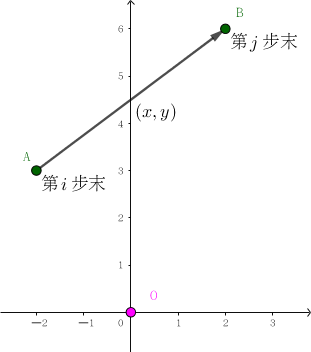

经过推理，人们终于找到那些投通过的异端，然而，投通过的人数远远没有达到 $51 \%$ 的比例。
这时有聪明的人跳出来，一拍大腿大喊一声 “我知道了！一定都是 UOJ 那个叫妹滋滋的管理员干的！”
人们仔细一想，觉得非常有道理，那些被抓到的犯人们更是叫的比谁都响，早早的把锅甩了出去，更不要说妹滋滋还是著名畅销丛书《MYSQL——从删库到跑路》的作者了。
舆论经过了几天的发酵，已经到了不可收拾的地步，几乎所有人都知道了所谓的 “妹滋滋的阴谋”，于是过街人人喊打的妹滋滋只能开始了她的逃亡之路。
现在妹滋滋在坐标为 $(0, 0)$ 的位置，她每天可以往上下左右四个方向中的一个方向移动一个单位的距离。
为了躲避来自四面八方的堵截，妹滋滋觉得 "自己都不知道自己在哪" 的风骚走位是坠吼得，于是她决定每天随机一个方向走。
然而走每个方向的概率并不是相同的，四个方向分别有一个权值，上下左右方向的权值分别是 $w_1, w_2, w_3, w_4$，走每个方向的概率和他的权值成正比。
在 $n$ 天后 (走了 $n$ 步)，厌倦了 “我是谁？我在哪？我要到哪里去” 的日常的妹滋滋开始思考新的问题：这 $n$ 天他经过的不同位置个数的方差 $V$ 是多少？
妹滋滋讨厌小数，所以她想要知道 $V \times \left( w_1 + w_2 + w_3 + w_4 \right)^n$ 对 $998244353$ 取模后的值。
方差即对于所有 $\left( w_1 + w_2 + w_3 + w_4 \right)^n$ 种情况的不同位置个数的方差。
第一行包含一个正整数 $n$ ($n \leq 100$)，表示天数。
第二行包含四个非负整数 $w_1, w_2, w_3, w_4$ ($0 \leq w_1, w_2, w_3, w_4 \leq 100$，$w_1, w_2, w_3, w_4$ 不全为 $0$)，分别表示方向上下左右的权值。
输出一行一个整数，表示答案。
先来处理 "方差" 这个奇怪的东西。
如果是 "期望" (平均值)，那么它就等于所有情况的总和，那么方差等于什么呢？
\begin{align*} & D(X) = \frac 1n \sum_{i=1}^n \left( X_i - \bar X \right)^2 \\ = & \frac 1n \sum_{i=1}^n \left( X_i^2 - 2 X_i \bar X + \bar X^2 \right) \\ = & \frac 1n \sum_{i=1}^n X_i^2 - \frac {2 \bar X} n \sum_{i=1}^n X_i + \bar X^2 \\ = & \frac 1n \sum_{i=1}^n X_i^2 - \frac 1 {n^2} \left( \sum_{i=1}^n X_i \right)^2 \\ = & E \left( X^2 \right) - E^2 (X) \end{align*}
即方差等于平方的期望减期望的平方。(ps: 这是一个很重要的结论，希望大家记住)
上面公式中的 $n$，即总的方案数，就等于 $\mathrm{ALL} = w_1 + w_2 + w_3 + w_4$。因此现在所要求的，就是不同位置个数 (即随机变量) 的总和 (期望)，以及平方和。
先考虑总和 (一次和)。由期望的线性性质，它等于所有方案中，每个格子被经过的方案数 (即每个格子的贡献，一个方案中一个格子被经过多次算一次)。
由于格子比较多，我们再转化一下。我们考虑第 $i$ 步末 ($i = 0, 1, \cdots, n$) 所到的格子对答案的贡献——即有多少种方案，使得第 $i$ 步末所到的格子是首次经过的。
设 $f_i$ 就表示上述 (斜体) 的方案数。
使用减法原理计算，对于所有 $\mathrm{ALL}^i$ 方案，每种不合法的方案都在第 $i$ 步前面的某步，设为第 $j$ 步 ($j = 0, 1, \cdots, i - 1$) 末到达了目标位置，于是后面的 $i - j$ 步相当于绕了一个圈。
设 $C_i$ 表示绕大小为 $i$ 的圈的方案数 (较易得到)，则有
$$ f_i = \mathrm{ALL}^i - \sum_{j=0}^{i-1} f_j C_{i-j} $$
于是 "不同位置个数" 的总和 (一次和) 就等于
$$ \sum_{i=0}^n f_i \cdot \mathrm{ALL}^{n-i} $$ (因为后面的 $n - i$ 步没有限制)
接下来再来考虑平方和 (二次和)。根据二次展开套路，我们需要将它转化为一次和，加上若干个 $2$ 倍乘积 (交叉项)。那么这个交叉项有什么实际意义呢？
可以发现，对于每一个交叉项，它对应于其中某一种方案里面的第 $i$ 步末和第 $j$ 步末 ($0 \leq i < j \leq n$)，其中第 $i$ 步末到达的格子，是前 $i$ 步首次到达的；第 $j$ 步末到达的格子，是前 $j$ 步首次到达的。
因此，现在我们需要求这样的方案数。
我们考虑如何记录状态。首先，最暴力的方法显然是五维状态——步数、第 $i$ 步末坐标、第 $j$ 步末坐标。但这样显然过不去，因此需要优化状态。
我们来回想当时计算一次和的时候，我们用的状态。我们发现，计算一次和时，我们用的状态只有一维——即 $f_i$ 中的 $i$，步数。
对了，计算一次和的时候，最终走到哪里是无所谓的，因为我们只需要保证前面没有到达这个位置即可。
因此，在计算二次和是时候，我们也可以省掉两维状态——即第 $i$ 步末到达的格子的坐标。这样就只有三维状态了，设为 $D_{j, x, y}$，其中 $j$ 表示第 $j$ 步末走完了 ($i$ 没有记)，$(x, y)$ 表示第 $j$ 步末的位置减去第 $i$ 步末的位置得到的向量。
接下来考虑如何进行转移。还是使用减法原理，先将所有情况考虑进来，然后删去不合法的。
首先，我们枚举这个 $i$ ——使用 $f_i$，这样前面 $i$ 步就不会有重复了。然后剩下的 $j - i$ 步，我们要走一个 $(x, y)$ 的向量。
在 $i$ 步内走向量 $(x, y)$ 的方案数，其实就是绕圈的一般形式，我们记为 $W_{i, x, y}$ ($C_i = W_{i, 0, 0}$)，直接递推即可。
因此此时我们对 $D_{j, x, y}$ 的贡献就有 $f_i \cdot W_{j-i, x, y}$。
我们要分析一下有哪些地方是算重的。
我们把上式得到的方案分为四种情况：其中一种合法，还有三种不合法：
我们把上述四种情况按照刚才的顺序记为情形 1、情形 2、情形 3、情形 4。其中绿色的情形 1 是合法状态，剩下的 $3$ 中均为不合法状态。可以证明，$f_i \cdot W_{j-i, x, y}$ 得到的所有状态是不重不漏地对应到这 4 种情况。
先来考虑去掉情形 2。
情形 2 的情况比较特殊，它相当于存在一个前缀，是一个合法状态。即存在 $i < k < j$，使得第 $i$ 步末首次到达 $A$，第 $k$ 步末首次到达 $B$。这里一共有 $f_{k, x, y}$ 种情形，而后面的 $j - k$ 步，相当于又绕了一个圈，且这个圈比较特殊，它不能经过 $A$ 点，即如果这个圈的起点和终点看作原点的话，它不能经过 $(-x, -y)$。
设经过 $(x, y)$ 的大小为 $i$ 的圈的方案数为 $\mathrm{cyc}_{i, x, y}$，则不经过 $(x, y)$ 的大小为 $i$ 的圈的方案数自然就等于 $\mathrm{acyc}_{i, x, y} = C_i - \mathrm{cyc}_{i, x, y}$ 啦。
它对 $D_{j, x, y}$ 的贡献就是 (负的) $D_{k, x, y} \cdot \mathrm{acyc}_{j-k, -x, -y}$。
接下来考虑去掉情形 3 和情形 4。这两种情况我们一起处理。
它相当于前面若干步我们首次到达了 $B$，然后绕了一个经过 $A$ 的圈 (把起点看作原点的话，就是一个经过 $(-x, -y)$ 的圈。
因此，这部分的贡献就等于 (负的) $f_k \cdot \mathrm{cyc}_{j-k, _x, _y}$。
好了，$f_{j, x, y}$ 的三种贡献就由上述三个粉色的公式构成，恰好不重不漏。
但是，这又遗留下来一个问题 (蓝色字)，就是如何求 $\mathrm{cyc}_{i, x, y}$ 和 $\mathrm{acyc}_{i, x, y}$。
由于 $C_i$ 是已知的，因此我们只需要求出一个即可。我们来考虑求出 $\mathrm{cyc}_{i, x, y}$。
(其实这是一个比较基础的路径 DP 题，如果会求 $\mathrm{cyc}_{i, x, y}$ 的可以直接跳过)
我们枚举第 $j$ 步最后到达 $(x, y)$，共有 $W_{j, x, y}$ 中，因此剩下的 $i - j$ 步需要走一个向量 $(-x, -y)$，且中途不能经过原点。
设 $P_{i, x, y}$ 表示走 $i$ 步到达 $(x, y)$，中途不经过 $(0, 0)$ 的方案数。和 $f_i$ 类似枚举不合法的，设第 $j$ 步末最后到达 $(0, 0)$，则要减去 $C_j \cdot P_{i-j, x, y}$。
这样一来，$\mathrm{cyc}_{i, x, y}$ 就等于 $\displaystyle \sum_{j=1}^{i-1} W_{j, x, y} \cdot P_{i-j, -x, -y}$。
于是乎我们就完成了 $\mathrm{cyc}_{i, x, y}$ 的计算，接下来就是统计答案 (二次和) 啦。
如前所述，二次和 = 一次和 + 交叉项 × 2，而交叉项就是
$$ \sum_{i=0}^n \sum_{(x, y) \neq (0, 0} D_{i, x, y} \cdot \mathrm{ALL}^{n-i} $$
于是我们也成功计算了二次和，最终通过最初的方差转期望公式即可算出答案。
总时间复杂度 $O \left( n^4 \right)$。
#include <bits/stdc++.h>
#define N 210
#define fy(a, b) int & a(int i, int x, int y) {return b[i][x + 103][y + 103];}
#define rep for (i = 1; i <= n; ++i) for (x = -i; x <= i; ++x) for (_y_ = i - abs(x), y = -_y_; y <= _y_; ++y)
typedef long long ll;
typedef int matrix[N][N][N], (*pmatrix)[N][N];
const ll mod = 998244353;
const int dx[4] = {-1, 0, 1, 0}, dy[4] = {0, -1, 0, 1};
int n, A[4], ALL, _y_;
int pw[N], f[N];
matrix _0, _1, _2, _3;
fy(walk, _0) fy(path, _1) fy(acyc, _2) fy(dbl, _3)
inline void add(int &x, const int y) {x = (x + y >= mod ? x + y - mod : x + y);}
ll PowerMod(ll a, int n, ll c = 1) {for (; n; n >>= 1, a = a * a % mod) if (n & 1) c = c * a % mod; return c;}
void init() {
int i;
scanf("%d%d%d%d%d", &n, A + 1, A + 3, A, A + 2); ALL = A[0] + A[1] + A[2] + A[3];
for (*pw = i = 1; i <= n; ++i) pw[i] = (ll)pw[i - 1] * ALL % mod;
}
int main() {
int i, j, d, x, y, S1 = 0, S2 = 0; ll ncyc, ret = 0;
init();
// arbitary walk
walk(0, 0, 0) = 1;
rep for (d = 0; d < 4; ++d)
add(walk(i, x, y), (ll)walk(i - 1, x - dx[d], y - dy[d]) * A[d] % mod);
// no prefix/suffix cycle
f[0] = 1;
for (i = 1; i <= n; ++i)
for (f[i] = pw[i], j = 0; j < i; ++j)
add(f[i], mod - (ll)f[j] * walk(i - j, 0, 0) % mod);
// non-cycle path
rep for (path(i, x, y) = walk(i, x, y), j = 1; j < i; ++j)
add(path(i, x, y), mod - (ll)path(j, x, y) * walk(i - j, 0, 0) % mod);
// appointed-point cycle
rep for (j = 1; j < i; ++j)
add(acyc(i, x, y), (ll)walk(j, x, y) * path(i - j, -x, -y) % mod);
// final
rep for (j = 0; j < i; ++j) {
add(dbl(i, x, y), (ll)f[j] * walk(i - j, x, y) % mod);
add(dbl(i, x, y), mod - (ll)f[j] * acyc(i - j, -x, -y) % mod);
ncyc = acyc(i - j, -x, -y) - walk(i - j, 0, 0); // [negate of] cycles not through (-x, -y)
ncyc += ncyc >> 63 & mod;
add(dbl(i, x, y), dbl(j, x, y) * ncyc % mod);
}
// compute answer
for (i = 0; i <= n; ++i) add(S1, (ll)f[i] * pw[n - i] % mod);
rep if (x || y) add(S2, (ll)dbl(i, x, y) * pw[n - i] % mod);
S2 = (S2 * 2ll + S1) % mod;
ret = (PowerMod(ALL, n, S2) - (ll)S1 * S1) % mod;
printf("%lld\n", ret + (ret >> 63 & mod));
return 0;
}
坑1：转移的正负量处理清楚，不要该减的却在加。